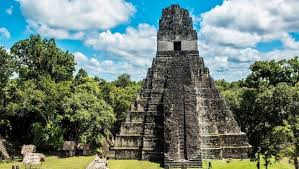
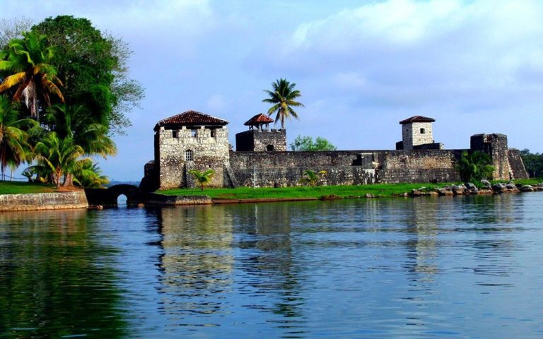
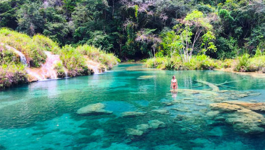
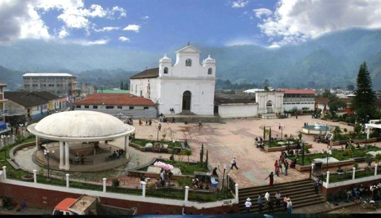
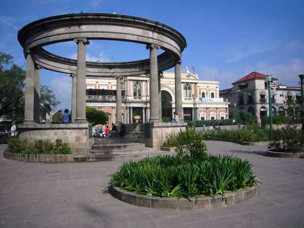
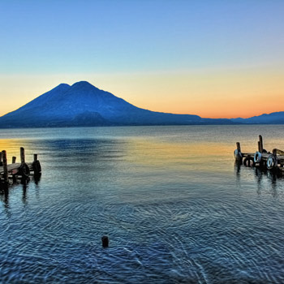

Lugares turisticos

Tikal (o Tik'al, de acuerdo con la ortografía maya moderna) es uno de los mayores yacimientos arqueológicos y centros urbanos de la civilización maya precolombina.
- ANTES Q190 AHORA Q180
- Se ubica en el departamento de Peten, el precio del hospedaje puede ser de Q.300 un apriximado de $.40

Desde el municipio de Livingston se puede iniciar el viaje en una lancha para llegar a Río Dulce. En el recorrido podrás observar el Castillo de San Felipe, así como diversidad de animales.
- ANTES Q160 AHORA Q150
- se ubica en el departamento de izabal, el precio del hospedaje puede ser de Q.150 un apriximado de $.20

Semuc Champey está formado por varias piscinas naturales que se caracterizan por su color verde turquesa. También te pueden impresionar las cuevas de Lanquín.
- ANTES Q100 AHORA Q100
- Se ubica en el departamento de Alta verapaz, el precio del hospedaje puede ser de Q.200 un apriximado de $.28

Al visitar Nebaj podrás conocer la región ixil, allí los pobladores utilizan su traje regional. Además deberás viajar a la ciudad de Chajul, que se conoce como el pueblo más tradicional de la región.
- ANTES Q125 AHORA Q125
- Se ubica en el departamento de quiche, el precio del hospedaje puede ser de Q.150 un apriximado de $.40

Hay diversidad de plazas, museos, iglesias, teatros, mercados y cementerios que podrás conocer.
- ANTES Q80 AHORA Q80
- Se ubica en el departamento de quetzaltenango, el precio del hospedaje puede ser de Q.185 un apriximado de $.40

Se encuentra rodeado de volcanes y varios pueblos, entre los poblados más característicos se puede mencionar a Santiago Atitlán, San Marcos La Laguna y San Juan La Laguna.
- ANTES Q100 AHORA Q100
- Se ubica en el departamento de Solola, el precio del hospedaje puede ser de Q.250 un apriximado de $.35
Puedes conocer el Centro Histórico, ubicado en la zona 1 de la capital. Además encontrarás una diversidad de museos, edificios gubernamentales, jardines botánicos y un zoológico.
- ANTES Q50 AHORA Q50
- Se ubica en el departamento de guatemala, el precio del hospedaje puede ser de Q.150 un apriximado de $.20
La ciudad de Santiago de los Caballeros de Guatemala, cuyo nombre oficial e histórico es Muy Noble y Muy Leal Ciudad de Santiago de los Caballeros de Guatemala y popularmente nombrada en la actualidad como Antigua Guatemala, es cabecera del municipio homónimo y del departamento de Sacatepéquez, Guatemala; se ubica a aproximadamente 25 kilómetros al oeste de la capital de la República de Guatemala, y a una altitud de 1470 msnm.
- ANTES Q25 AHORA Q20
- Se ubica en el departamento de sacatepequez, el precio del hospedaje puede ser de Q.100 un apriximado de $.14
Esquipulas, en el departamento de Chiquimula, es uno de los centros de peregrinaje más importantes de Latinoamérica por el famoso Cristo Negro que alberga la basílica de la ciudad.
- ANTES Q190 AHORA Q180
- Se ubica en el departamento de chiquimula, el precio del hospedaje puede ser de Q.150 un apriximado de $.20

Semuc Champey es un monumento natural y uno de los lugares más bellos de Guatemala, con el río Cahabón formando pozas que van del color jade al verde turquesa de acuerdo con la época del año y el clima..
- ANTES Q110 AHORA Q110
- Se ubica en el departamento de alta verapaz, el precio del hospedaje puede ser de Q.100 un apriximado de $.15